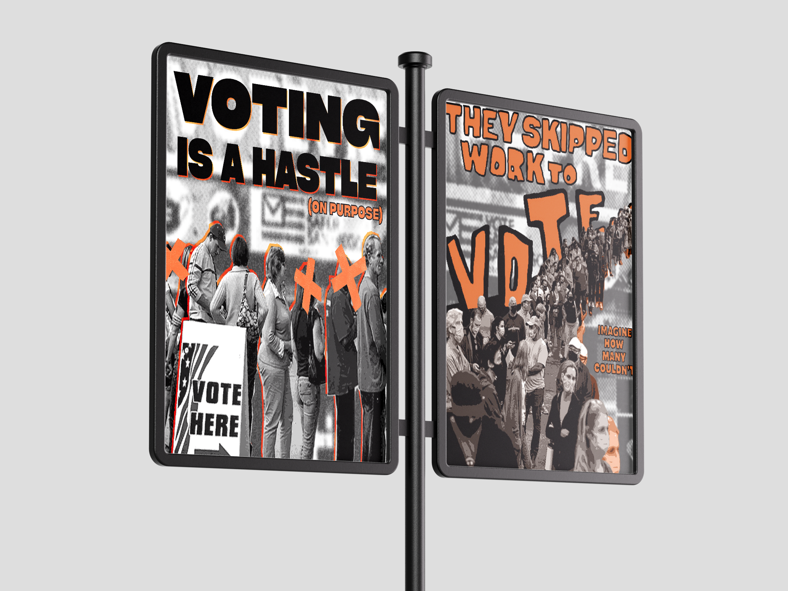
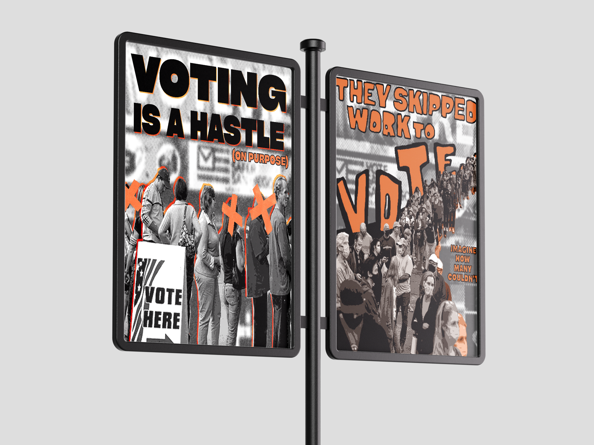
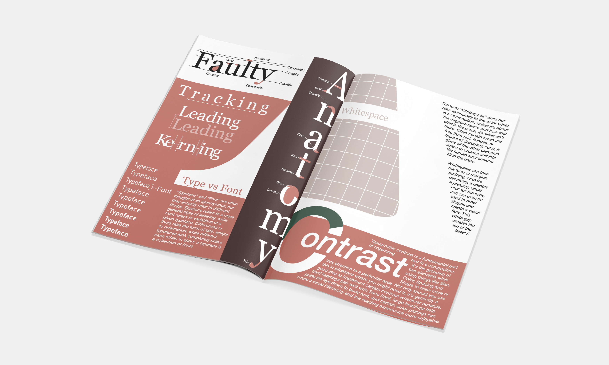
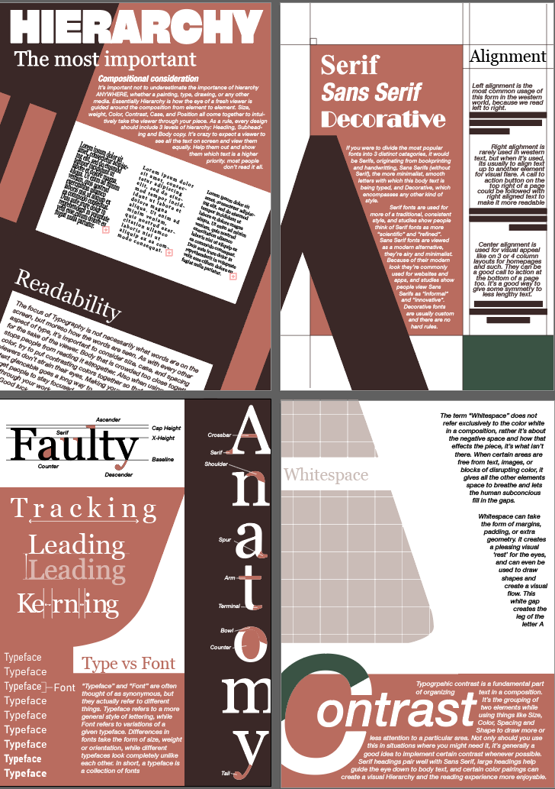
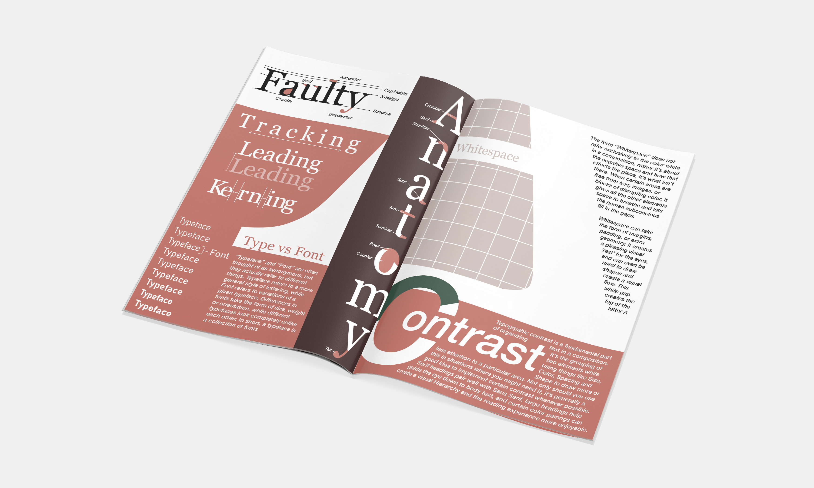
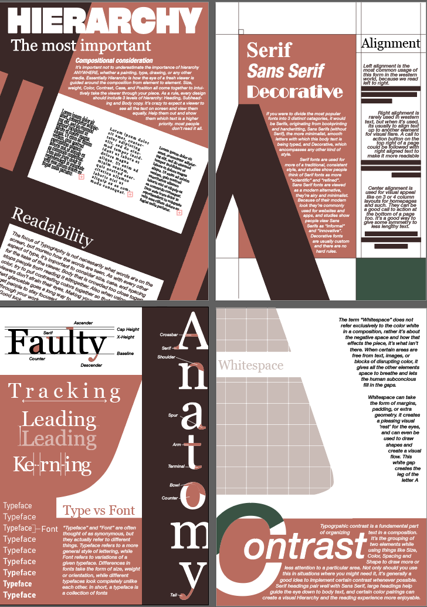
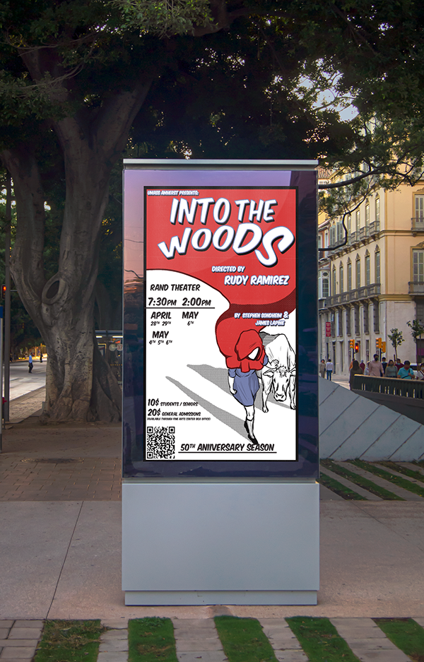
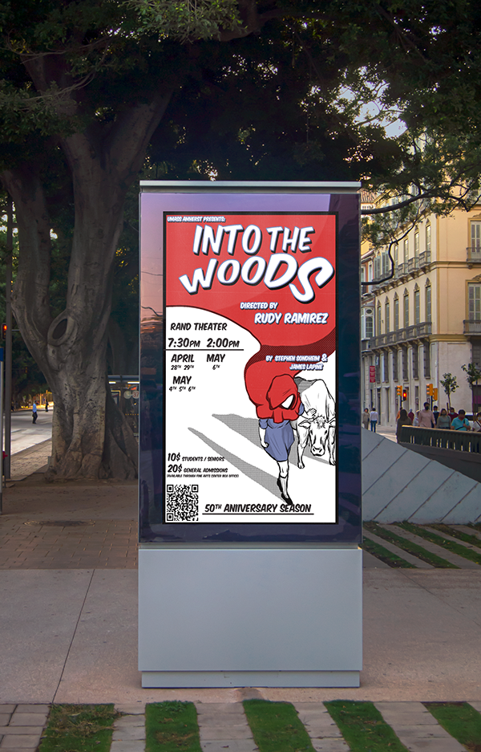

Fashion Magazine
I drew inspiration from 90s Black culture, exploring the era’s influential style, music, and trends to create this fictional magazine. This project allowed me to combine my passion for 80s and 90s fashion with my design work, strengthening my skills in historical research, mood board creation, and editorial layout. I examined how hip-hop, R&B, and Black cinema shaped fashion movements, influencing everything from baggy denim to luxury brand collaborations. Through constructing the zine, I refined my typography choices, print design techniques, and the ability to visually translate cultural movements into a cohesive aesthetic.
Duration
4 weeks
Skills
Research
Layout
Typography
Role
Graphic Designer


 

 



 
